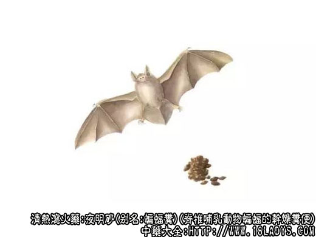

夜明砂为少常用中药，原名：“大鼠屎”，《神农本草经》列为中品，宋.《日华本草》称夜明砂。
别名：蝙蝠粪，天鼠屎。
来源：为脊椎动物哺乳纲翼手目，蝙蝠科蝙蝠的干燥粪便。
产地：全国各地山区均产。主产浙江、江西、江苏、广西、甘肃、辽宁。
性状鉴别：形如鼠粪，长椭圆形。两端微尖，长椭圆形。两端微尖，长5～7毫米，直径约2毫米。表面粗糙，棕褐色或灰棕色。常随破，呈小颗粒状或粉末状。在放大镜下观察，可见棕色或黄棕色有光泽的昆虫头、眼及小翅。气无，味微苦辛。
以身干，色棕褐，质轻，无泥砂者为佳。
主要成分：含甲种维生素类物质。
药理作用：清热、明目、清疳。其作用可能可能主要与所含的甲种维生素类物质有关。
炮制：生用。
性味：辛、寒。
归经：入肝经。
功能：活血消积，清热明目。
主治：青盲、雀目，内外障翳，疳积，瘀血作痛。
临床应用：
1、用于治疗夜盲症和小儿麻疹后角膜软化。须配猪肝、苍术等富含甲种维生素物质。在初起夜盲时，可配猪肝、蛤壳粉等，方如退翳散。
2、用于治疗小儿疳积（主要为虫极腹胀）。须与其它治疳药（如胡黄连、干蟾蜍）、驱虫药（如使君子、苦楝根皮）、行气药（如木香、陈皮）同用，制丸服食，能加强消疳效果。
用量：2.4～9g。